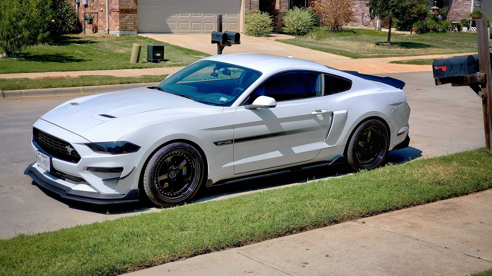
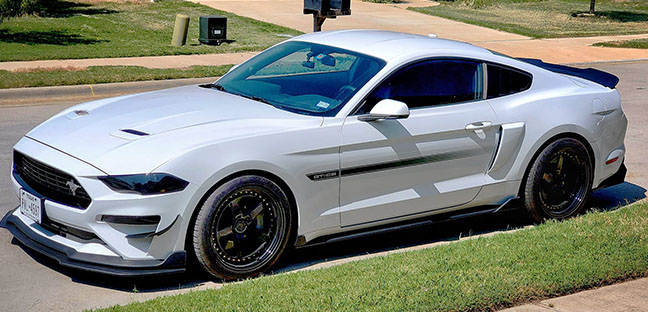

Lab 1 -- Photoshop Basics
For this lab, since it was our first, I needed to choose a photo that was either mine or public domain. I then needed to select a significant part of the image to crop and keep as my new image.
This was the first time I'd ever used Photoshop. I chose a photo my husband took of his Ford Mustang. I used the Crop tool to do a simple crop, removing as much as possible from the picture unrelated to the Mustang. I cropped out the mailbox to the right and the entirety of the house above the car. This brought the Mustang into the main focus of the new picture. I found that using Photoshop was easier than I expected.

